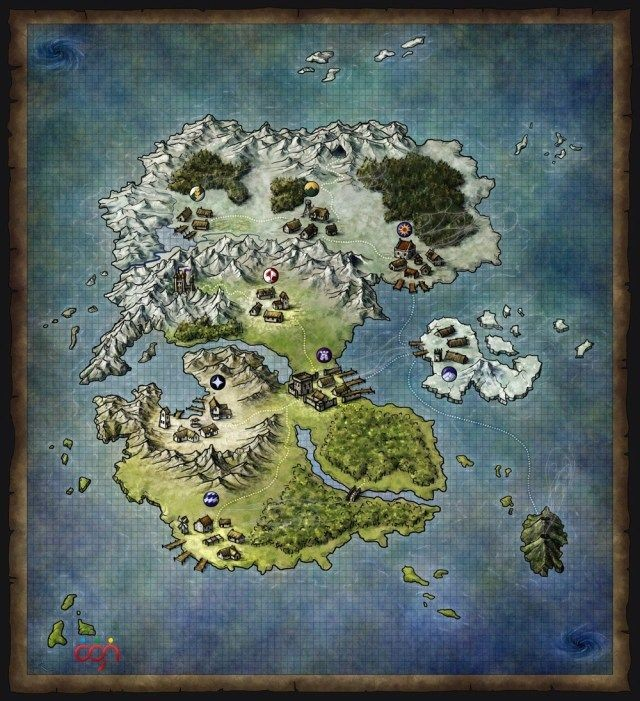
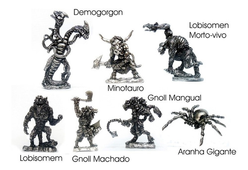
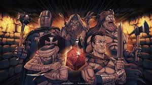
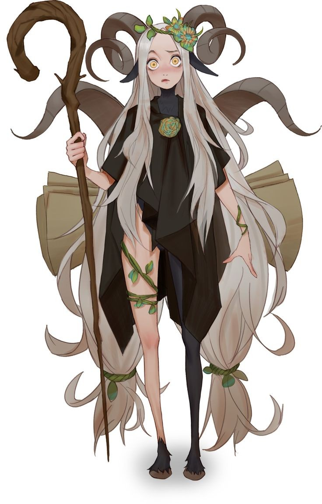
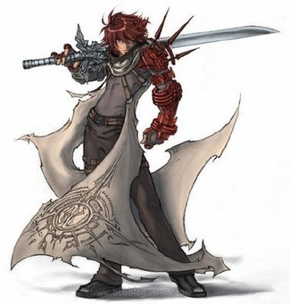
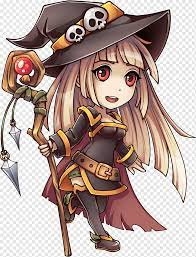
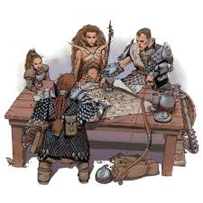

Bem-vindo
Entre numa grande aventura junto com os grandes defensores da Ilha da lua, para proteger a ilha da lua escolha sua classe e vamos começar.
Mapa

O mapa da ilha da lua é diverso, contém 5 cidades Principais 8 cidades pequenas, grandesmontanhas e 8 florestas.
Os monstros estão no caminho

Demogorgon
diz-se em uma bíblia de demônios que esse demônio seria a sombra de um guerreiro chamado
"Yeegil",
cujo nome significava "provedor do mal" , mas histórias antigas dizem que esse homem não poderia
fazer o mal então o diabo lhe deu uma sombra que faria todo o mal que ele.
Minotauro
um personagem da mitologia grega cuja representação mais tradicional entre os gregos antigos era
uma criatura com a cabeça de um touro sobre o corpo de um homem. O autor romano
Ovídio descreveu-o simplesmente como "parte homem e parte touro". Habitava no
centro de um Labirinto, uma elaborada construção.
Lobisomem
é um ser lendário que é descrito como um humano capaz de se transformar em lobo ou em algo semelhante
a um lobo em noites de lua cheia.
Gnoll's
Os Gnolls eram uma raça humanóide que mais se assemelhava aos híbridos humano-hiena em Faerûn . Eles
eram humanóides carnívoros, conhecidos por sua cultura selvagem e métodos guerreiros.
Aranhas Gigantes
Aranhas modificadas geneticamente por um mago do mal há milhenios atrás estão a solta
prontas para devorar quem passar na frente delas
As classes que você pode escolher:

Druida

druida é um sacerdote devotado a proteger a natureza. Através de forte ligação com
sua patrona natureza, ele é capaz de usar magia divinas, não tomando a energia
natural para si, mas sim tornando-se um com ela. Essa relação dá outros poderes,
como a capacidade de falar com animais e tomar para si a forma deles. A filosofia
de um druida varia. Alguns apenas desejam proteger a natureza que permanece virgem,
outros sentem asco da destruição causada pela evolução da civilização, buscando até
mesmo destruir cidades para restaurar a glória da natureza.Outros Druidas ganham raiva
da natureza e acabam por causar uma grande destruição,como o caso de alguns "Corruptores"
Guerreiro

Pronto para o combate, o Guerreiro sabe usar todos os tipos de armaduras e escudos. sendopreferencial o uso de armaduras pesadas de placas. Assumindo o papel de protetor, o uso de
escudos é frequente nesta classe, porém muitas vezes ele abdica de seu uso para empunhar
uma arma com as duas mãos para causar mais dano em combate. O Guerreiro sabe usar todos os
tipos de armas simples, comuns e marciais corpo a corpo ou à distância. Sendo de sua preferência
o uso de armas corpo a corpo marciais como martelos de guerra, espadas longas, de duas mãos ou
espadas bastardas. A fonte básica de seus poderes é marcial obtida através de treinamento
Sua função no combate é de "Defensor" (Tanque), ou seja, a linha de frente do combate. Mas também
pode assumir as funções de "Agressor" (Dano).
Mago

se distingue pela capacidade de lançar certos tipos de magia, mas sendo fraco em combate;
subclasses são distinguidas por pontos fortes em algumas áreas de magia e fraqueza em outras.
Por que jogar?

The defenders of the moon island: the legend of Odin's treasure é um jogo cativante online
no qual você pode jogar com seus amigos, ou fazer novos com as guildas
Guerras

As grandes guerras mundiais entre guildas é um evento mensal, no qual os ganhadores
ganharão o grande tesouro de Odin